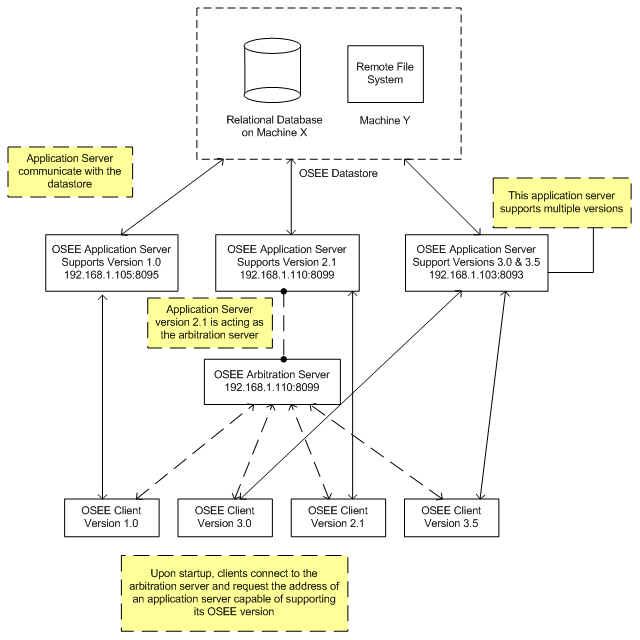
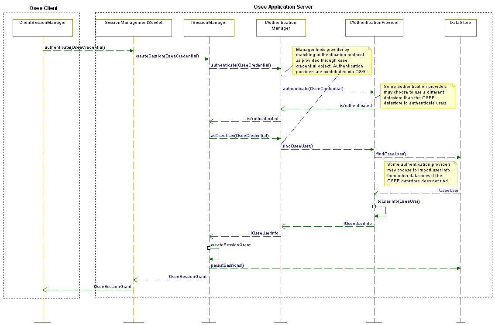

| Developers' Guide | ||
|---|---|---|
|
|
||
| Updating This Document | ||
The central feature of OSEE is an extensible framework called the OSEE Application Framework. Default applications distributed with the OSEE framework are OSEE Define (for requirements management) and OSEE ATS (the Action Tracking System, for configuration management).
 The Application Framework provides all the necessary services to allow the applications to persist and share data in a common, version controlled object database. Just as Eclipse provides the ability to add a plugin to the existing Eclipse environment, so OSEE allows other applications to add plugins and share the common data store.
The Application Framework provides all the necessary services to allow the applications to persist and share data in a common, version controlled object database. Just as Eclipse provides the ability to add a plugin to the existing Eclipse environment, so OSEE allows other applications to add plugins and share the common data store.
And just like Eclipse RCP allows an application to be built and deployed using the Eclipse framework but not include all the standard applications like JDT, OSEE allows an application to be built and deployed using the OSEE Application Framework without including such applications as OSEE Define and OSEE ATS.
In order to attain a greater degree of scalability, the Open System Engineering Environment (OSEE) has been slowly migrating into a distributed architecture where clients interact with an application server, which is in charge of managing access to an OSEE data store.
Additionally, in an effort to provide load balancing, failure recovery, and code compatibility, clients consult an arbitration server before connecting to an application server. The arbitration server's responsibility is to keep track of all the application servers interacting with a common data store and direct clients to a healthy application server compatible with the client's OSEE code version. In this arrangement, arbitration servers act as the initial access points into the OSEE server cloud where a collection of application servers manage client requests to access and operate on a common OSEE data store. Figure 1 shows an example of the OSEE Client/Server network.

In Figure 1, three application servers interact with a single OSEE data store. The data store is comprised of a relational database and a remote file system used to store binary data. It is not necessary for the database and the binary data to exist on the same machine; the only requirement is that the application servers have access to both resources. Upon start-up, each application server registers himself on the data store's server lookup table by entering its host address, port, supported code versions, and its unique id. When the arbitration server receives a request to find an application server to support a client connection, the arbitration server reads the data store's server lookup table and selects the best match for the client. The client requests this information from the arbitration server upon start-up or whenever it can't communicate with an application server. It is important to note that the arbitration server does not have to be a different server than an application server. All application servers are able to act as an arbitration server. An application server is referred to as an arbitration server when clients interact with it in this context. Figure 2 depicts the sequence of events involved in the arbitration process.

Once a client receives an application server's address and port information, the client must authenticate with the application server before it can gain access to the OSEE data store. During the authentication process, a client submits to the application server the current user's credential information and the authentication protocol id to use during the process. The application server verifies the user via the selected protocol and grants access to the data store by creating a session for the user. From this point forward, the application server will be responsible for managing access to the data store by identifying the user via the session id. Whenever a client wants to interact with the application server, it will need to submit its session id in order to gain access to the OSEE data store. Figure 3 shows the sequence of events involved in the authentication process.

The OSEE framework is built around a user configurable and extensible data model consisting of attributes, artifacts, and relations. An attribute is a key-value pair representing a single data element such as a description, a date, a number, or a file. These basic data elements are grouped into artifacts. Artifacts can be configured to have any number of attributes. By default, an artifact will always have an attribute of type name. In addition, artifacts can be related to one another via relations. By default, an artifact will always have a default hierarchy relation type. This allows artifacts to be connected together in a tree. In the example below, two instances of the basic artifact type are shown. Artifact 1 has an attribute of type name set to string data "X". Artifact 2 has an attribute of type name set to string data "Y". These two artifact instances are related via the default hierarchy relation type. Artifact 1 is Artifact 2's parent artifact.

Now that we have a basic understanding of the model, lets take a closer look at attributes and how they are defined.
An attribute is defined through its attribute type. The attribute type is a blue print for constructing attribute instances. It defines the type of data the will be held by the attribute, the data source or who provides it, how many instances can be created, default value to use during creation, whether the attribute can be tagged for word searches, and if the attribute holds file data, its file extension.
By default, data contained in the attribute can be represented through OSEE's basic data types:

OSEE provides three attribute data providers: the default attribute data provider, URI attribute data provider, and the Clob attribute data provider.
OSEE can be configured by setting certain Java system properties when launching Eclipse and by setting various attribute values on the Global Preferences artifact in the datastore. Java system properties are key/value pairs and can be passed as launch arguments in the form of -D<key>=<value> ( i.e. -Dosee.authentication.protocol=trustAll). These -D options can be specified directly in the command to launch Eclipse or in the corresponding .ini file for the eclipse executable used. Server-side OSGI properties are specified in an JSON file referenced by the system property cm.config.uri.
See the file org.eclipse.osee.support.config/launchConfig/osee.postgresql.json for an example.
JdbcComponentFactory receives its OSGi properties from the JSON file referenced by the system property cm.config.uri. JdbcConnectionFactoryManager.getConnection() uses the JDK's DriverManager.getConnection() which in turn uses the Java Standard Edition Service Provider mechanism to load the JDBC driver referenced in the JSON file. The JDBC driver must include the file META-INF/services/java.sql.Driver which contains the name of the JDBC driver implementation of java.sql.Driver.
Do a Quick Search on the Common branch for "Global Preferences" and open the resulting artifact in the artifact editor. The available attribute types for this artifact define what can be configured. Each attribute is self-documenting, because the attribute tip text documents how to use each one.
| System Property Name | Values | Default | Description |
|---|---|---|---|
| osee.connection.info.uri |
SYSTEM PATH
|
File system path or uri containing custom database connection information. | |
| osee.db.connection.id | <db identifier> |
Default from db.connection file | Database Connection Information]] section for more information. |
| osee.jini.forced.reggie.search | true, false |
false |
If true, adds the lookupList to the global lookup list such that a refresh will try to locate the service again |
| osee.jini.lookup.groups | user defined group name | the Jini Group that all OSEE provided Jini services will register with | |
| osee.log.default | FINE, INFO, WARNING, SEVERE |
WARNING |
the default logging level for all loggers |
| osee.port.scanner.start.port | 1 - 65535 |
18000 |
the first port number to test for availability when a new port is needed |
| System Property Name | Values | Default | Description |
|---|---|---|---|
| org.osgi.service.http.port | 1 - 65535 |
-1 |
Port the client will use to communicate with the OSEE Application Server |
| osee.application.server.data |
SYSTEM PATH
|
User Home | A directory on the file system to be used by the application server to store and serve artifact binary data. |
| osee.db.embedded.server |
<address>:<port>
|
When specified, this system property sets the URL used to launch an embedded database server. | |
| osee.version |
1">;<"version 2">
|
When specified, this system property sets the application server's supported client versions. NOTE: version string can use regular expressions | |
| osee.check.tag.queue.on.startup | true, false |
false | When specified, this system property allows the application server to check the tag queue and begin tagging and pending tag jobs. |
| System Property Name | Values | Default | Description |
|---|---|---|---|
| osee.application.server |
http://<address>:<port>
|
When specified, this system property sets the URL used to reference the application server and arbitration is bypassed. | |
| osee.arbitration.server |
http://<address>:<port>
|
The arbitration server address and port to use. This system property must be specified for the system to gain access to OSEE data. If the application server property is set then that address takes precedence and arbitration is bypassed. | |
| osee.authentication.protocol | protocol name | protocol to be used by the client to authenticate with the server | |
| osee.choice.on.db.init | choice name | the predefined database initialization choice | |
| osee.file.specified.schema.names.on.db.init | true, false |
false |
Specifies whether OSEE database initialization should use the schema names specified in the schema.xml files instead of using the connection schema. Using the connection specified schema is the default behavior. |
| osee.import.from.connection.id.on.db.init |
SYSTEM PATH
|
Specifies where table data should be imported from during OSEE database initialization. The default is to use the database connection id specified in the schema.xml files. | |
| osee.import.on.db.init | true, false |
false |
Specifies whether OSEE database initialization should import database data as part of its tasks. |
| osee.local.application.server | true, false |
false |
When set to true launches an application server upon start up. Uses '''org.osgi.service.http.port' arg to determine port to use.'' |
| osee.local.http.worker.port | <port> |
Port Scan starting from 18000 |
Port to use for local worker server. |
| osee.prompt.on.db.init | true, false |
true |
Specifies whether to interactively prompt the user during database initialization for init choice |
| osee.record.activity | true, false |
true |
Specifies whether user activity should be logged |
| osee.ote.benchmark | true, false |
||
| osee.ote.cmd.console | true, false |
Specifies whether to enable the OTE command console | |
| osee.ote.server.title | free text name | name given to the OTE server which is displayed in the test manager | |
| osee.ote.timing.log.path | |||
| osee.ats.ignore.config.upgrades | true, false |
As described in the Architecture Section
http://wiki.eclipse.org/OSEE/Developers_Guide#Client.2FServer_Architecture, the Clients can be configured to choose a particular server or group of servers. By specifying a server version, the arbitration server will pick only the application servers that are configured to work with the client. For instance, the configuration would make it possible to choose only servers in the same location as the clients.
Steps:
1. Configure each application server on the local server machine(s) to support the local clients.
a) Set the osee.version system property to a string that will provide a common property to use with the OSEE Client.
Example: In the VM Arguments for the server startup, add:
–Dosee.version=”localSiteName”
b) Set the osee.application.server.data to a location on the server for the local copy of the application data
Example: -Dosee.application.server.data=”path/to/local/data”
Note: this local path could be rsync’d to another site to improve local data performance
c) Set the http port to the port number for the client to access the server on
Example: -Dorg.osgi.service.http.port=8092
2. Configure the OSEE Client to connect to the one of the servers as an arbitration server
a) Set the osee.arbitration.server system property to the URL for one of the application servers configured in step 1.
Example: -Dosee.arbitrations.server=
http://your.server.com:8092
b) Set the osee.version system property to match the application server(s)
Example: –Dosee.version=”localSiteName”
/*******************************************************************************
* Copyright (c) 2012 Boeing.
* All rights reserved. This program and the accompanying materials
* are made available under the terms of the Eclipse Public License v1.0
* which accompanies this distribution, and is available at
* http://www.eclipse.org/legal/epl-v10.html
*
* Contributors:
* Boeing - initial API and implementation
*******************************************************************************/
${package_declaration}
/**
* @author Joe P. Schmoe
*/
${typecomment}
${type_declaration}
OseeLog.log(Activator.class, Level.SEVERE, ${exception_var});
The data model in OSEE is extensible and user configurable. Users can define new artifact, attribute, and relation types and their constraints such as multiplicity and applicability. Type inheritance allows similar types to be defined and modified without tedious redundancy because similar types inherit what is common from their super type.
The OSEE data model is defined using a tabular format involving 5 tables. See the following link for an example.
The full data model can be defined using a single spreadsheet or be divided among multiple spreadsheets that can reference types defined in any spreadsheet.
| Column Name | Description |
|---|---|
| Artifact Type Name | any valid UTF-8 characters with a max length of 75 bytes |
| Super Type Name | The super artifact type from which this type will inherit associated attributes and relations. Another concrete artifact type or an abstract one that exists only in data model definition. |
When defining new artifact types, by default, the Java class used to create the artifact at runtime is org.eclipse.osee.framework.skynet.core.artifact.Artifact. When a specialized subtype of Artifact is desired, the extension point org.eclipse.osee.framework.skynet.core.ArtifactFactory can be used to contribute an artifact factory that extends the class org.eclipse.osee.framework.skynet.core.artifact.ArtifactFactory. The factory's isResponsibleFor(String artifactTypeName) method determines if a particular factory will be used to construct an artifact of a given artifact type. Thus the artifact factory extension point can be used to case user defined artifact types to be constructed at runtime using a custom Java class that extends Artifact.
| Column Name | Description |
|---|---|
| Attribute Base Type | |
| Attribute Data Provider | The attribute data provider is responsible for storing and retrieving attribute data. Fully qualified java class name of a class that implements org.eclipse.osee.framework.skynet.core.attribute.providers.IAttributeDataProvider. org.eclipse.osee.framework.skynet.core.DefaultAttributeDataProvider may be used when the data to be stored does not exceeded 4000 bytes, otherwise org.eclipse.osee.framework.skynet.core.UriAttributeDataProvider may be used. |
| Attribute Type Name | Any valid UTF-8 characters with a max length of 500 bytes |
| File Extension | Any valid UTF-8 characters with a max length of 50 bytes; only applies when using the org.eclipse.osee.framework.skynet.core.UriAttributeDataProvider |
| Tagger ID | If the attrbiute’s content is to be included in the search index for the quick search, use DefaultAttributeTaggerProvider, otherwise leave blank. |
| Default Value | The initial value given an attribute upon initialization, this may be left blank |
| Validity Xml | For the attribute base type org.eclipse.osee.framework.skynet.core.EnumeratedAttribute, specifies the valid enumerations. For example, <Page_Type><Enum>Portrait</Enum><Enum>Landscape</Enum></Page_Type> |
| Min Occurrence | The framework with prevent having lest than this number of this attribute type on a single artifact |
| Max Occurrence | The framework with prevent adding more than this number of this attribute type to a single artifact |
| Tip Text | Text to describe an attribute. Any valid UTF-8 characters with a max length of 4000 bytes |
| Column Name | Description |
|---|---|
| Artifact Type Name | Exact name of an artifact type defined above (or previously) |
| Attribute Type Name | Exact name of an attribute type defined above (or previously) to be associated with the corresponding artifact type |
| Column Name | Description |
|---|---|
| Relation Type Name | Any valid UTF-8 characters with a max length of 50 bytes |
| Side A Name | Descriptive name for the A side of the relation. Any valid UTF-8 characters with a max length of 50 bytes |
| A to B Phrase | An optional phrase that describe the relation between the artifacts from the side A perspective. Any valid UTF-8 characters with a max length of 50 bytes |
| Side B Name | Descriptive name for the B side of the relation. Any valid UTF-8 characters with a max length of 50 bytes |
| B to A Phrase | An optional phrase that describe the relation between the artifacts from the side B perspective. Any valid UTF-8 characters with a max length of 50 bytes |
| Short Name | Five or less characters is typical. This abbreviated name is used in the user interface when space is at a premium |
| Ordered | Yes to have artifacts on the same side of this relation type use a user defined ordered, otherwise No |
| Column Name | Description |
|---|---|
| Artifact Type | Exact name of an artifact type defined above (or previously) |
| Relation Type | Exact name of an relation type defined above (or previously) |
| Side A Max | An artifact of type "Artifact Type" can be on side "A", "Side A Max" number of times for relation links of type "Relation Type" |
| Side B Max | An artifact of type "Artifact Type" can be on side "B", "Side B Max" number of times for relation links of type "Relation Type" |
To import changes to the data model for an existing OSEE database:
Import... OSEE category, select OSEE Types Resolved dependencies and Report Changes is checked. Select Finish. Osee Default Enum will always show up on OseeEnum Types tab Persist Changes checkedTo automatically import the data model during database initialization use the extension point org.eclipse.osee.framework.skynet.core.OseeTypes
Downloading and Configuring Eclipse
JUnit Method Rules:
| Rule class | Description | Example |
|---|---|---|
| OseeHousekeepingRule | Checks if the Artifact Cache is clean | |
tag_all Configuring ATS for Change Tracking
the extension point org.eclipse.osee.framework.ui.skynet.BlamOperation can be used to contribute a custom OSEE operation that provides the developer a very quick way to define the graphical interface that supplies the operation with the user specified parameters. org.eclipse.osee.framework.ui.skynet.blam.operation.ChangeArtifactTypeBlam provides a simple example.
References
Assuming the following layout:<br/>/UserData/org.eclipse.osee<br/>/UserData/org.eclipse.ip.p2_1.0.0.v201203200040-DEV<br/><br/>machine@user /UserData/org.eclipse.osee/plugins/org.eclipse.osee.parent:<br/>$mvn clean verify -Declipse-ip-site="file:../../../org.eclipse.ip.p2_1.0.0.v201203200040-DEV"
☞ '''Depends on org.eclipse.osee.ip.p2'''
| Path | Artifact | Description |
|---|---|---|
| plugins/org.eclipse.osee.client.all.p2/target/ | repository/ | OSEE IDE Client P2 Site |
| org.eclipse.osee.client.all.p2.zip | OSEE IDE Client P2 Archived Update Site | |
| plugins/org.eclipse.osee.client.all.product/target/products/ | build_label.txt | OSEE Build Information |
| org.eclipse.osee.ide.id-linux.gtk.x86.tar.gz | OSEE Client IDE All-In-One Linux x86 | |
| org.eclipse.osee.ide.id-linux.gtk.x86_64.tar.gz | OSEE Client IDE All-In-One Linux x86 64-bit | |
| org.eclipse.osee.ide.id-win32.win32.x86.zip | OSEE Client IDE All-In-One Win32 x86 | |
| org.eclipse.osee.ide.id-win32.win32.x86_64.zip | OSEE Client IDE All-In-One Win32 x86 64-bit | |
| plugins/org.eclipse.osee.x.server.p2/target | repository/ | OSEE Application Server P2 Site |
| server/ | OSEE Application Server | |
| org.eclipse.osee.x.server.p2.zip | OSEE Application Server Archived Update Site | |
| org.eclipse.osee.x.server.runtime.zip | OSEE Application Server Zipped Runtime | |
TODO: add html generated from SKYNET_VERSIONING.xml file.
The following steps walk a developer through defining the classes necessary to begin importing coverage data into the OSEE application. Please keep in mind that these are meant to be simplified examples and developers are encouraged to 'get creative' when adapting these examples to their own particular context.

1. Write a class that extends AbstractCoverageBlam
public class MyCoverageImportBlam extends AbstractCoverageBlam {
public static String COVERAGE_IMPORT_DIR = "Coverage Import Directory";
public static String NAMESPACE = "Code Namespace";
@Override
public String getName() {
return "My Coverage Import";
}
@Override
public Collection<String> getCategories() {
return Arrays.asList("Blams");
}
@Override
public String getDescriptionUsage() {
return "Import coverage from coverage directory.";
}
@Override
public void runOperation(final VariableMap variableMap, IProgressMonitor monitor) throws Exception {
try {
final String coverageInputDir = variableMap.getString(COVERAGE_IMPORT_DIR);
if (!Strings.isValid(coverageInputDir)) {
throw new OseeArgumentException("Must enter valid filename.");
}
final String namespace = variableMap.getString(NAMESPACE);
if (!Strings.isValid(namespace)) {
throw new OseeArgumentException("Must enter valid namespace.");
}
File file = new File(coverageInputDir);
if (!file.exists()) {
throw new OseeArgumentException("Invalid filename.");
}
MyCoverageImporter myCoverageImporter = new MyCoverageImporter(coverageInputDir, namespace);
CoverageImport coverageImport = myCoverageImporter.run(monitor);
setCoverageImport(coverageImport);
} catch (Exception ex) {
OseeLog.log(Activator.class, OseeLevel.SEVERE_POPUP, ex);
}
}
@Override
public String getXWidgetsXml() {
StringBuffer buffer = new StringBuffer("<xWidgets>");
buffer.append("<XWidget xwidgetType=\"XDirectorySelectionDialog\" " + getDefaultDirectory() + " displayName=\"" + COVERAGE_IMPORT_DIR + "\" />");
buffer.append("<XWidget xwidgetType=\"XText\" displayName=\"" + NAMESPACE + "\" />");
buffer.append("</xWidgets>");
return buffer.toString();
}
private String getDefaultDirectory() {
if (CoverageUtil.isAdmin()) {
return " defaultValue=\"C:\\UserData\" ";
}
return "";
}
}
2. Define a class that implements ICoverageImporter
public class MyCoverageImporter implements ICoverageImporter {
private final String coverageInputDir;
private final String namespace;
private final CoverageImport coverageImport = new CoverageImport("My Coverage Import");
public MyCoverageImporter(String coverageInputDir, String namespace) {
this.coverageInputDir = coverageInputDir;
this.namespace = namespace;
}
@Override
public String getName() {
return "My Coverage Importer";
}
@Override
public CoverageImport run(IProgressMonitor progressMonitor) throws OseeCoreException {
/*
* Use any member variables to populate coverageImport
*/
return coverageImport;
}
}
3. Add extension point declaration to package's plugin.xml
<?xml version="1.0" encoding="UTF-8"?>
<?eclipse version="3.4"?>
<plugin>
<extension
point="org.eclipse.osee.framework.ui.skynet.BlamOperation">
<Operation
className="com.my.coverage.MyCoverageImportBlam">
</Operation>
</extension>
</plugin>
OSEE provides a simple mechanism to contribute static web resources in the MANIFEST.MF. The header "Osee-JaxRs-Resource" allows specifying a path in the bundle and its mapping to a URL. See org.eclipse.osee.ats.rest/META-INF/MANIFEST.MF for an example. The resource(s) at that path will be severed by the embedded web server in the OSEE server at the specified URL.
yes. Everything except:
config.ini org.eclipse.equinox.simpleconfigurator
The simple answer is BOTH. OSEE Application Framework is created to allow applications to be built on top and share the common data model. This can be used independently of any OSEE applications. In addition, there are applications that are delivered with and use the OSEE Application Framework. This includes a full featured Requirements and Document Management System (OSEE Define), a powerful change tracking and configuration management application (OSEE ATS - Action Tracking System), a fully customizable peer-review module and other project, reporting and metrics tools. These application can be used out-of-the-box and new applications can be created or integrated on the framework to share and contribute to the same data.
No. OSEE's was created by The Boeing Company in support of the Apache AH-64 Attack Helicopter flight control software. Although it was created to handle the complexity of a large US Department of Defense program, it was architected to support any systems engineering project from a simple application built for a single customer to a large complex application like the Apache flight controls. In addition, since OSEE is an independent application, the OSEE development team uses OSEE to develop, deploy and maintain OSEE.
Skynet is a legacy term for the persistence portion of the OSEE Application Framework.
OSEE provides Artifacts, Attributes and Relations that are strongly typed. This means that the user can create their own artifact type, for example a "Software Requirement" to represent the requirements at a software level and their own attribute types, for example a "Qualification" attribute or a "Safety Criticality" attribute and event their own relations, for example a "Software Requirement to Allocation" relation. These types are defined in the Artifact Framework and can be created dynamically in the system during database creation or while running. This allows the end user to expand the data that is being stored in OSEE without providing a new release.
The Action Tracking System is the tightly integrated configuration management system built in OSEE and very tightly integrated with the OSEE Application Framework. It uses a powerful workflow engine to provides a fully customizeable workflow to track improvements, problems and support for any number of teams/tools/programs simultaneously. This gives the user a single point view into all the work that they are required to do.
Although there are a number of open source and commercial bug tracking systems available, OSEE's goal to integrate workflow management and provide a tight integration with the Application Framework, and the applications built on top, required us to develop ATS. ATS is meant to be more than simple bug tracking since it can be used to manage multiple teams working on multiple products or support simultaneously. This means that you can create a single "Action" to "Fix the XYZ capability" that will create the necessary workflows for all the teams that need to perform work. For example, a workflow may be created for not only the Software Development team, but also the test team, documentation team, integration team and even facilities like labs or conference rooms. Each team then moves independently through its workflow to perform the work necessary for the common "Action". In addition, ATS enables complete customization of different workflows for each configured team. This means that the documentation team can follow their own "process" which may contain 5 different states while the application developers can follow their own more complex "process" which may contain 30 different states.
Traceability is handled in OSEE through the use of Relations. These relations can be defined in OSEE according to their need and the users can then add and remove these relations throughout the lifecycle of the requirements or other artifacts. Deliverable documents or any report generation would also use this traceability.
OSEE Define is OSEE's advanced Requirements and Document Management System. OSEE Define can be used to track a simple application's requirements, code and test or configured to support a large program doing concurrent development with multiple parallel builds and manage requirements for multiple product lines simultaneously. Although any application file (document) can be stored and managed, OSEE Define is tightly integrated with Microsoft Word© to store and manage individual requirement objects (stored in XML) and provide advanced features like index based searching and showing differences between historical changes. Integrated tightly with the Action Tracking System, OSEE Define can be configured to provide advanced configuration management for any set of requirements object.
The HRID creation, storage and use are currently under re-design. Below are the notes.
To have a unique, short, constant, communicatable and customizable number that artifacts in the system can be referenced by. By definition, this number is database dependent which means it may occur in another database.
Note: All artifacts currently have a GUID. This number id long, constant, un-consomizeable, un-communicatable, database independent number and thus could not work as the HRID.
<character sequence><numeric sequence>
where TBD <character squence> - Alpha numeric, All caps, > 1 and < 6 characters <numeric sequence> - blank or unique numeric number, not zero padded TBD by default, the framework will provide a unique 6 character Alpha-numeric number
ATS is one of the main consumers of this number and is thus an important portion of the design considerations.
*
(Work in progress)
|
|
||
| Updating This Document |